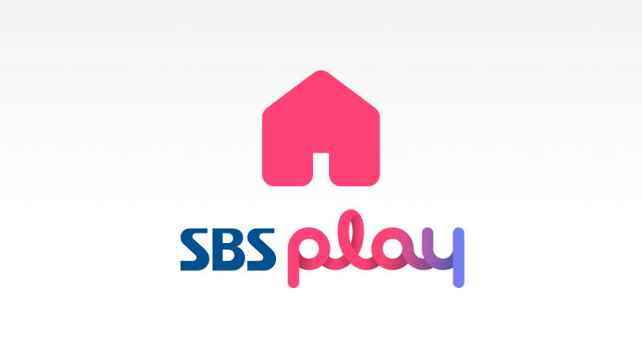

대표 로고대표 브랜드 마크
대표 로고대표 브랜드 마크홈 > 브랜드 매거진 > tvN
tvN
tvN은 CJ ENM이 운영하는 종합 엔터테인먼트 케이블 채널로, 2006년 개국했다.
산업 분야 미디어·엔터테인먼트 · 공개 등급 자료 기반 · 브랜드 평가 4.4 ★
한눈에 보는 브랜드
tvN은 CJ ENM 계열의 케이블 종합 엔터테인먼트 채널이다. 2006년 10월 개국했다.
브랜드 관점
100% 자체제작과 실험적 편성으로 케이블의 한계를 넘어선 CJ ENM의 대표 채널이다.
시작과 성장
2006년 CJ 계열 유료방송 채널로 개국했다. 자체제작과 실험적 편성을 표방하며 드라마·예능에서 지상파에 필적하는 영향력을 키웠다.
브랜드 아이덴티티
〈도깨비〉·〈응답하라 1988〉·〈사랑의 불시착〉·〈눈물의 여왕〉 등 화제의 드라마와 〈유 퀴즈 온 더 블럭〉 같은 예능으로 한국 케이블 채널을 대표하는 브랜드가 됐다.
제품과 서비스
드라마·예능 중심의 종합 엔터테인먼트 채널이다. '도깨비', '미스터 션샤인', '사랑의 불시착', '눈물의 여왕' 등 대표 드라마를 선보였다.
사람들
지배구조: CJ ENM 산하 채널 브랜드(독립 법인 아님).
현재 상태
2024년 '눈물의 여왕'이 최고 시청률 약 24.9%로 tvN 드라마 역대 1위를 기록하며 글로벌 화제성을 이끌었다.
타임라인
정리된 연도형 이벤트가 없습니다.
BI/CI 변천사
대표 로고대표 브랜드 마크함께 읽을 브랜드
 미디어·엔터테인먼트 · 자료 기반CJ ENM
미디어·엔터테인먼트 · 자료 기반CJ ENMCJ ENM은 CJ그룹 계열의 종합 엔터테인먼트·미디어 기업으로, 2018년 CJ E&M과 CJ오쇼핑의 합병으로 출범했다.
미디어·엔터테인먼트 · 자료 기반스튜디오드래곤스튜디오드래곤(Studio Dragon)은 CJ ENM 계열의 드라마 제작 스튜디오로, 2016년 설립됐다.
 미디어·엔터테인먼트 · 자료 기반JTBC
미디어·엔터테인먼트 · 자료 기반JTBCJTBC는 중앙그룹이 운영하는 대한민국의 종합편성채널이다. 2011년 12월 개국해 드라마·예능·뉴스 전 장르를 편성하며 종편 중 영향력 있는 채널로 자리잡았다.

미디어·엔터테인먼트 · 자료 기반SBSSBS(Seoul Broadcasting System)는 1990년 설립된 한국 최대의 민영 지상파 방송사다.
MI
MIT Museum
미디어·엔터테인먼트 · 편집 검수MIT MuseumMIT 뮤지엄은 매사추세츠공과대학교가 운영하는 과학·기술·디자인 박물관으로, 2022년 10월 케임브리지 켄들 스퀘어의 새 건물로 이전 개관하며 디자인 스튜디오 펜타...
 미디어·엔터테인먼트 · 편집 검수New York Botanical Garden
미디어·엔터테인먼트 · 편집 검수New York Botanical GardenNew York Botanical Garden는 2024년에 기록된 Museums, Galleries & Libraries 계열의 브랜드 아이덴티티 사례입니다. Wo...
 미디어·엔터테인먼트 · 디렉토리YG 엔터테인먼트
미디어·엔터테인먼트 · 디렉토리YG 엔터테인먼트YG엔터테인먼트는 양현석이 1996년 설립한 대한민국의 종합 엔터테인먼트 기업이다. 빅뱅·블랙핑크·트레저 등을 배출하며 음악성과 개성 있는 아티스트로 'YG Fami...
 미디어·엔터테인먼트 · 디렉토리스톤뮤직 엔터테인먼트
미디어·엔터테인먼트 · 디렉토리스톤뮤직 엔터테인먼트스톤뮤직 엔터테인먼트(Stone Music Entertainment)는 CJ ENM 계열에서 출발한 한국의 음악 제작·유통 브랜드이다.